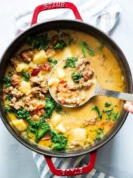

Creamy sausage and kale soup with potatoes, onion, and herbs that's full of flavor and delicious nourishment.
Gather all ingredients.
Heat a large soup pot over medium-high heat. Crumble sausage into the pot; cook and stir until browned, about 10 minutes. Drain and discard grease.
Stir half-and-half, potatoes, chicken broth, milk, onion, oregano, and pepper flakes into sausage, and bring to a boil. Reduce heat to low and simmer until potatoes are tender, about 30 minutes.
Season with black pepper. Stir in kale; simmer until kale is tender, 10 to 15 more minutes.
Serve and enjoy!